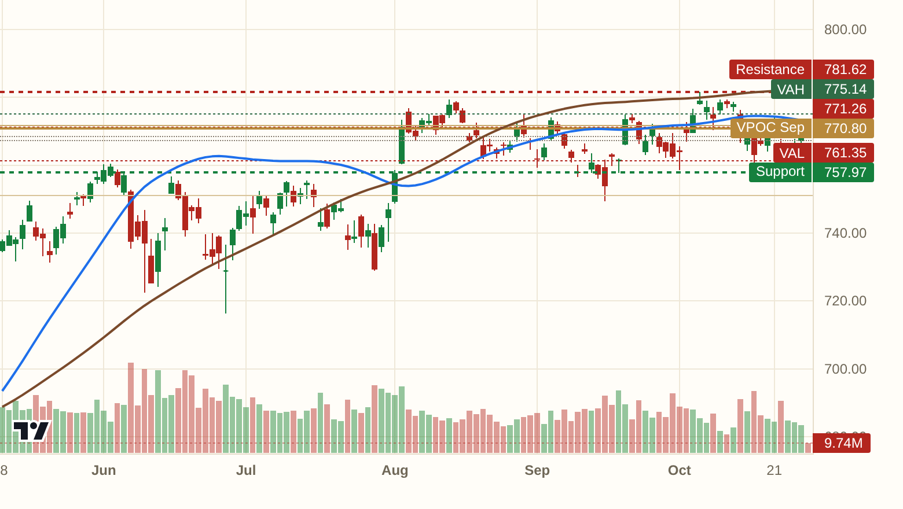
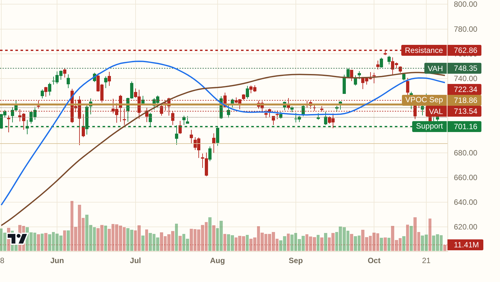
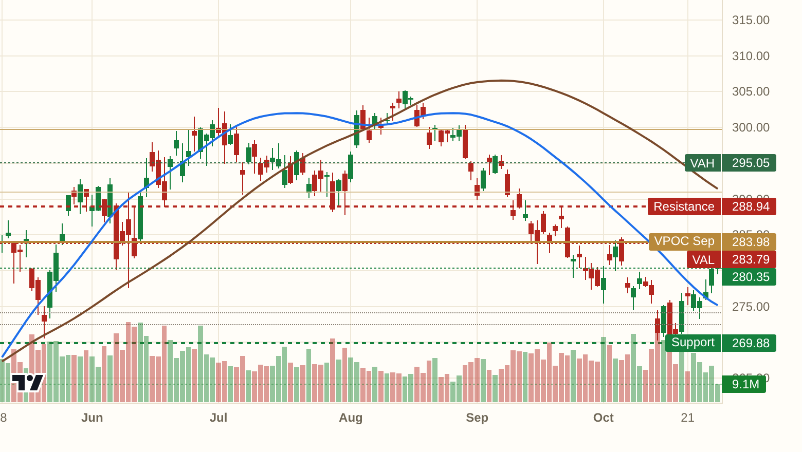
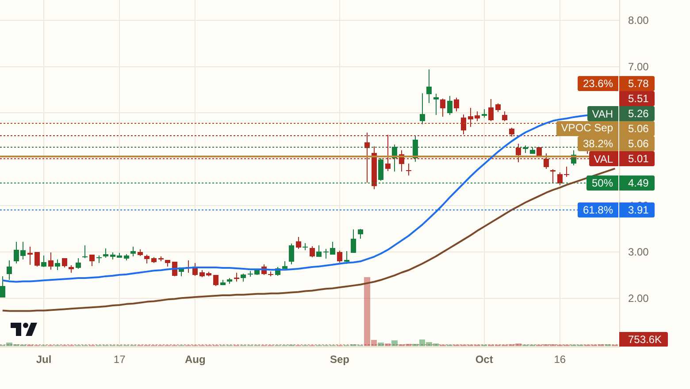
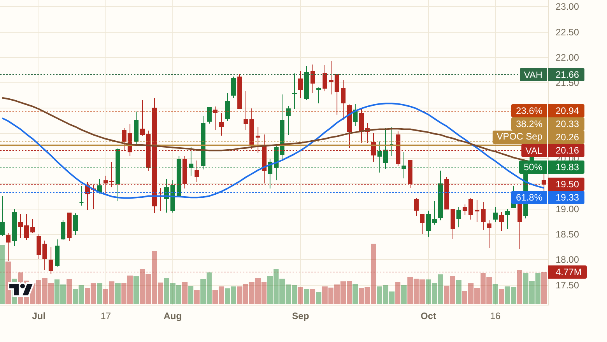
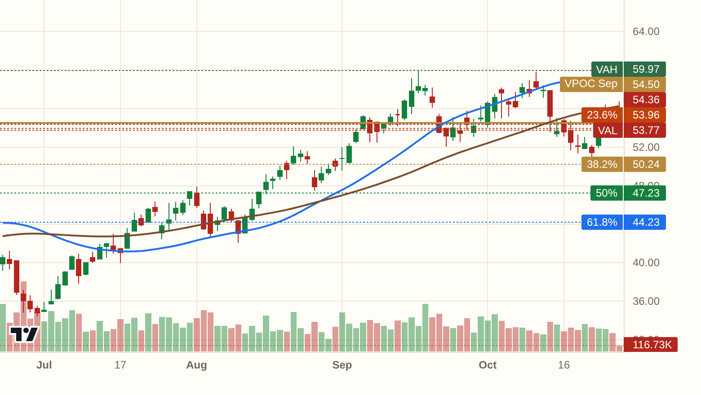
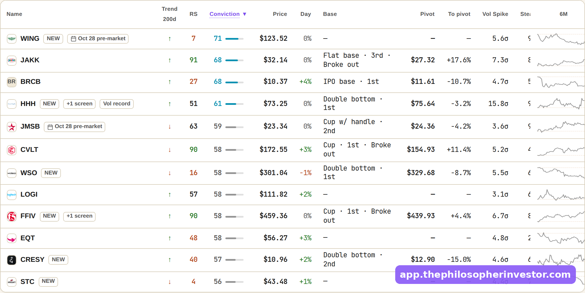

Hello my friends,
Yesterday's wall at 770.8 held, SPY sits right on top of it with Powell on deck this afternoon. The tape is holding its breath, nobody is buying the breakout before the print.
SPY at 771.26, pinned between the Sep magnet at 770.8 below and the Aug magnet at 771.73 above. Trend spine still bearish, so until the tape proves it on volume, this is a coin flip at the wall.

QQQ at 722.34, right against the armored zone at 723.9. Clear it on the FOMC and the sellers lose their anchor. Fail, and the Aug magnet at 719.46 is the next catch.

IWM at 280.35, holding above the 100 HMA, climbing toward the Sep VAL at 283.79. That is the only ceiling before real air.

The HHH long from the Dip board last Friday is up +13.3% from the 66.11 entry, sitting above target. The book is public, wins and stops both.
The whole book, wins and stops included: https://app.thephilosopherinvestor.com/portfolios?utm_source=daily
The Dip board caught it. Last 5.51, a controlled pullback inside an uptrend, trend spine bullish with the 100 HMA riding above the 200 HMA. The way I read it, this is the lift back toward the 52-week high while the broader tape chops at the Fed wall. Plan: work in near 5.12, wrong below 4.34, first target 6.57, about 1.9:1. Small-cap, size accordingly.

Also off the Dip board. The stock sits below its monthly magnet but holds the Jul VPOC, which is the kind of controlled flush this board hunts. Options chain is quiet, IV rank near 22, so shares are the clean expression. Wrong on acceptance below 18.73. The full plan lives on the board.

Energy led the tape today and LPG came off the Dip board with the Oil and Gas E&P sub-sector showing strong relative strength. Trend spine bullish, pinned to the Sep magnet. Earnings sit 7 days out, so size this one for the gap risk. Wrong below 46.65.

Breadth flipped from DEFENSIVE to CAUTIOUS at Monday's close, five names stack on three or more boards tonight, and the flow tape leans calls on TSLA, AMD and AAPL into the mega-cap prints. Berkshire bought $246.5M of LEN with their own money, and Consulting Services plus Oil and Gas E&P lead the sub-sector tape. Read together, institutions are positioning for Powell to clear, the internals are quietly rebuilding while the headlines hold their breath. *[screenshot: the board, straight from the app]*
Every setup above sits on its board with the full levels: https://app.thephilosopherinvestor.com/screeners?utm_source=daily
Tonight's levels are good for tonight. The boards re-rank at every close, and tomorrow's post starts from scratch.
Everything in this post comes straight from the app: the live boards, the full levels on every idea, the flow. https://app.thephilosopherinvestor.com/?utm_source=daily
$20 a month or $200 a year, billed on Substack. Cancel anytime. Subscribe here: https://philosopherinvestor.substack.com/subscribe
This is not financial advice. Do your own research and manage your risk.
See you tomorrow,
Daniel
FOMC day, SPY stuck at the magnet
Hello my friends,
Yesterday's wall at 770.8 held, SPY sits right on top of it with Powell on deck this afternoon. The tape is holding its breath, nobody is buying the breakout before the print.
SPY at 771.26, pinned between the Sep magnet at 770.8 below and the Aug magnet at 771.73 above. Trend spine still bearish, so until the tape proves it on volume, this is a coin flip at the wall.
*[chart: $SPY]*
QQQ at 722.34, right against the armored zone at 723.9. Clear it on the FOMC and the sellers lose their anchor. Fail, and the Aug magnet at 719.46 is the next catch.
*[chart: $QQQ]*
IWM at 280.35, holding above the 100 HMA, climbing toward the Sep VAL at 283.79. That is the only ceiling before real air.
*[chart: $IWM]*
The HHH long from the Dip board last Friday is up +13.3% from the 66.11 entry, sitting above target. The book is public, wins and stops both.
The whole book, wins and stops included: https://app.thephilosopherinvestor.com/portfolios?utm_source=daily
The Dip board caught it. Last 5.51, a controlled pullback inside an uptrend, trend spine bullish with the 100 HMA riding above the 200 HMA. The way I read it, this is the lift back toward the 52-week high while the broader tape chops at the Fed wall. Plan: work in near 5.12, wrong below 4.34, first target 6.57, about 1.9:1. Small-cap, size accordingly.
*[chart: $BNC]*
Also off the Dip board. The stock sits below its monthly magnet but holds the Jul VPOC, which is the kind of controlled flush this board hunts. Options chain is quiet, IV rank near 22, so shares are the clean expression. Wrong on acceptance below 18.73. The full plan lives on the board.
*[chart: $NOV]*
Energy led the tape today and LPG came off the Dip board with the Oil and Gas E&P sub-sector showing strong relative strength. Trend spine bullish, pinned to the Sep magnet. Earnings sit 7 days out, so size this one for the gap risk. Wrong below 46.65.
*[chart: $LPG]*
Breadth flipped from DEFENSIVE to CAUTIOUS at Monday's close, five names stack on three or more boards tonight, and the flow tape leans calls on TSLA, AMD and AAPL into the mega-cap prints. Berkshire bought $246.5M of LEN with their own money, and Consulting Services plus Oil and Gas E&P lead the sub-sector tape. Read together, institutions are positioning for Powell to clear, the internals are quietly rebuilding while the headlines hold their breath. *[screenshot: the board, straight from the app]*
Every setup above sits on its board with the full levels: https://app.thephilosopherinvestor.com/screeners?utm_source=daily
Tonight's levels are good for tonight. The boards re-rank at every close, and tomorrow's post starts from scratch.
Everything in this post comes straight from the app: the live boards, the full levels on every idea, the flow. https://app.thephilosopherinvestor.com/?utm_source=daily
$20 a month or $200 a year, billed on Substack. Cancel anytime. Subscribe here: https://philosopherinvestor.substack.com/subscribe
This is not financial advice. Do your own research and manage your risk.
See you tomorrow,
Daniel
